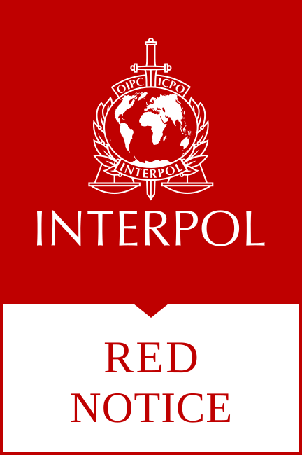
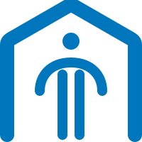
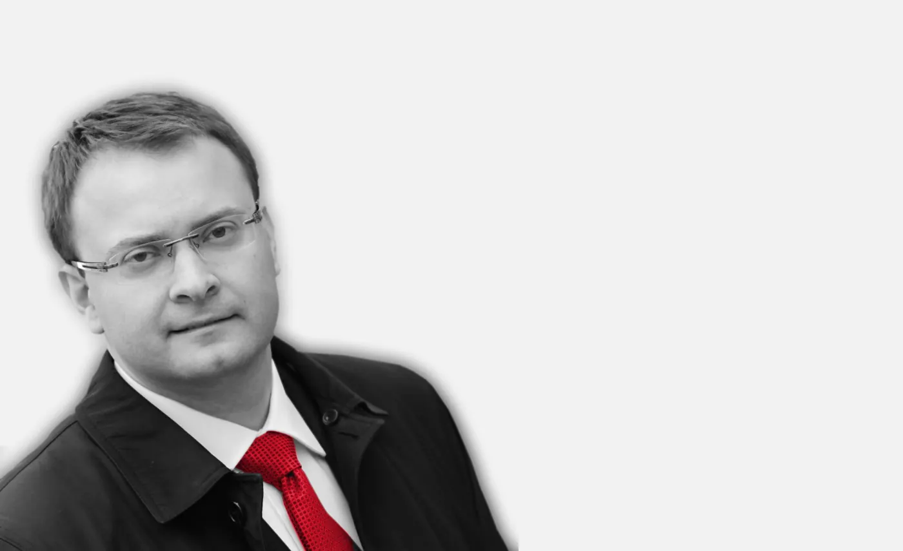

Паведамленні Інтэрпола
Аспрэчванне вышуку і праверка звестак у файлах Інтэрпола.
Падрабязней → МіхалевічАдвакатскае бюро
МіхалевічАдвакатскае бюроАдвакатскае бюро Міхалевіча
Кансультацыі і прадстаўніцтва для тых, хто сутыкнуўся з міжнародным вышукам, паведамленнямі Інтэрпола або працэдурай экстрадыцыі.
Чым мы дапамагаем
Абярыце найбліжэйшую тэму. Падрабязнасці абмяркуем разам.

Аспрэчванне вышуку і праверка звестак у файлах Інтэрпола.
Падрабязней →Юрыдычная дапамога пры запыце аб выдачы паміж дзяржавамі.
Пра паслугу →
Падтрымка людзей, якія шукаюць абарону ад пераследу ў сваёй краіне.
Пра паслугу →Выкарыстанне міжнародных механізмаў пры парушэнні правоў.
Пра паслугу →
«Вельмі важна, куды ты ўцякаеш».— Алесь Міхалевіч, інтэрв’ю «Медузе»
Досвед, які вызначыў практыку
Алесь Міхалевіч стварыў бюро пасля таго, як сам сутыкнуўся з міжнародным вышукам. Гэты досвед дапамагае бюро надаваць асаблівую ўвагу людзям, якія аспрэчваюць неабгрунтаваныя або палітычна матываваныя запыты.
Бюро вядзе справы аб міжнародным вышуку і экстрадыцыі, працуючы з многімі юрыстамі і праваабаронцамі з розных краін. У кожнай справе яно супастаўляе факты, дакументы і працэдуры ў закранутых краінах, каб выбудаваць узгодненую стратэгію абароны.
Пра бюро →Раскажыце, якія краіны ўдзельнічаюць у справе і якія дакументы вы атрымалі. Бюро падкажа, што спатрэбіцца для першапачатковага вывучэння і якія крокі магчымыя далей.
Першыя пытанні
Бюро прапануе комплексную дапамогу ў справах з міжнародным складнікам: вышук па лініі Інтэрпола, экстрадыцыя, прытулак і абарона правоў чалавека. Звязаныя юрыдычныя пытанні можна разглядаць у межах адной справы.
Звяжыцеся з бюро, каб узгадніць зручныя месца і час асабістай сустрэчы перад паездкай.
У трансгранічных справах на вынік адначасова ўплываюць законы розных краін, стадыя разгляду і наяўныя доказы. Таму спачатку важна разабрацца ў абставінах і выбраць адпаведны спосаб абароны.